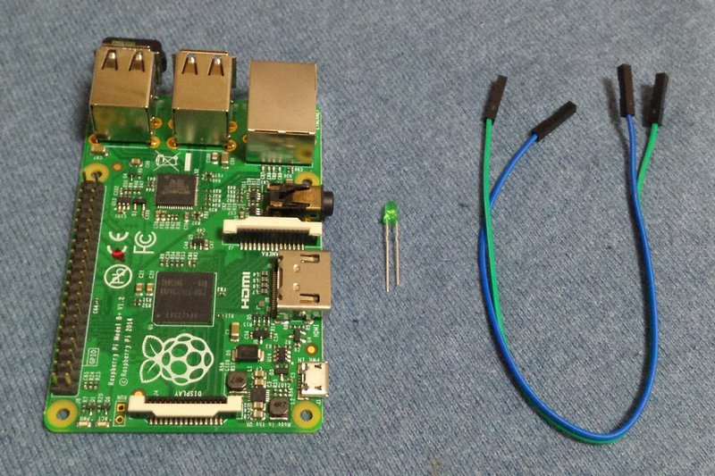

用树莓派搭电子积木入门篇01
文章目录
对象读者
我假设你的树莓派已经连上你家里的路由(有线无线都行)。并且你已经可以在另外一台设备(台式机，笔记本，手机，平板电脑都可以) 上通过SSH软件登陆到你的树莓派了。当然你也可以直接在树莓派上通过HDMI连接显示器，通过USB键盘鼠标直接进行操作。不管怎样，你可以启动树莓派并进入树莓派的linux命令行界面。
友情提示，如果你不明白这段话的意思，建议先接触一些更基础的知识。
硬件
- 树莓派一台(废话)。1代B,B+或者2015年刚出的2代都可以。我自己用的是2代，GPIO的管脚编号可能会稍微有些差异，相应的需要注意或修改的地方我会在文中说明。另外，今后教程的硬件部分不再特意提到树莓派了。
- LED发光管(可以理解成小灯泡)一只，什么颜色都可以，一般卖电子零件的商店肯定有卖。或者去淘宝买。几块钱就可以买到一把。
- 母头杜邦线两条，就是电线，带插头的是公头，带插座的是母头。我们这个实验用两端都是母头的杜邦线。
- 
最终效果
控制你的LED发光管按一定时间间隔闪烁 图
原理说明
LED灯有一长一短两根针脚，如果将较长的一根连上电源正极，较短的一根脸上电源负极造成电位差就可以点亮LED灯。
但如果两个针脚同时都是负极（低电平）或者都是正极（高电平）则不会产生电位差也就不会被点亮。
将较短的一根连上树莓派的GND（也就是负极）端，较长的一根不要直接连上树莓派的5V或者3.3V（两者都可理解为正极或高电平，以后统称高低电平，不再另行解释），而是连接到一个GPIO针脚上。
然后我们可以通过程序控制GPIO口的电位高低状态即可控制LED的亮（GPIO口设置为高电平）或灭（GPIO口设置为低电平）。
树莓派GPIO针脚说明（适合1代Mode B+或者2代Mode B）
先看一下实物图：
右上角有左右两排共40根针脚，并不是所有的针脚都是GPIO针脚。详情参考下图：
注意这两张图的上下左右顺序已经对齐了，实际连线的时候不要看错方向接错针脚。否则有损坏树莓派的可能。